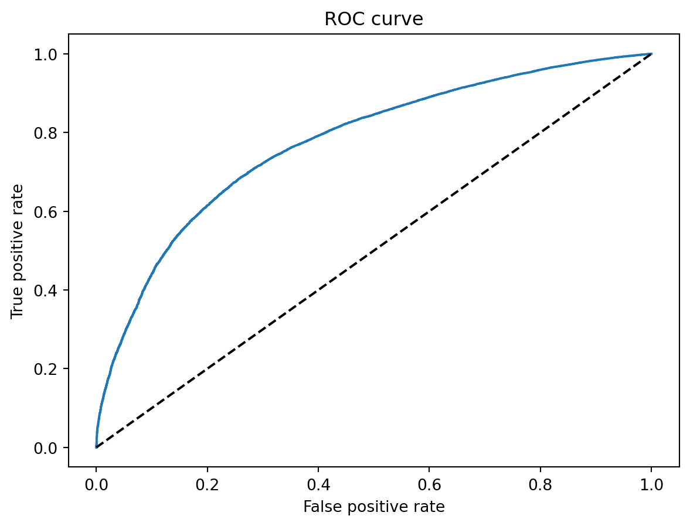

| id | member_id | ... | total_cu_tl | inq_last_12m | |
|---|---|---|---|---|---|
| 0 | 1077501 | 1296599 | ... | NaN | NaN |
| 1 | 1077430 | 1314167 | ... | NaN | NaN |
| 2 | 1077175 | 1313524 | ... | NaN | NaN |
| 3 | 1076863 | 1277178 | ... | NaN | NaN |
| 4 | 1075358 | 1311748 | ... | NaN | NaN |
5 rows × 74 columns
El siguiente trabajo tiene como objetivo la realización de una scorecard que ubique a las personas en un punto de [TODO]
Para realizar utilizamos la base de datos proporcionada por U.S. Department of Education (2016).
Para comenzar se hará un cargue del conjunto de datos:
| id | member_id | ... | total_cu_tl | inq_last_12m | |
|---|---|---|---|---|---|
| 0 | 1077501 | 1296599 | ... | NaN | NaN |
| 1 | 1077430 | 1314167 | ... | NaN | NaN |
| 2 | 1077175 | 1313524 | ... | NaN | NaN |
| 3 | 1076863 | 1277178 | ... | NaN | NaN |
| 4 | 1075358 | 1311748 | ... | NaN | NaN |
5 rows × 74 columns
Como se puede ver en Table 1 la base de datos contiene 74 columnas además de 466285 observaciones.
Por otra parte nuestra variable de interés será loan_status o estado del prestamo de cada observación que tiene entre posibles valores: ‘Fully Paid’, ‘Charged Off’, ‘Current’, ‘Default’, ‘Late (31-120 days)’,‘In Grace Period’, ‘Late (16-30 days)’, ‘Does not meet the credit policy. Status:Fully Paid’ y ‘Does not meet the credit policy. Status:Charged Off’. Así y como nuestro objetivo parte de la clasificación en dos grupos partiremos de esta variable para otorgar a cada observación el valor de: incumplió con obligaciones financieras (0 en la nueva columna creada ‘Obligaciones_financieras’) o cumplió con las obligaciones financieras(1 en la nueva columna creada ‘Obligaciones_financieras’), el primero siendo equivalente a los valores ‘Charged Off’, ‘Default’, ‘Late (31-120 days)’ y ‘Does not meet the credit policy. Status:Charged Off’ en ‘loan_status’.
Para comenzar a seleccionar variables y como nuestro interés de acuerdo al objetivo es tener la mayor cantidad de datos sin imputar obviaremos para el ajuste del modelo aquellas cuya cantidad de datos nulos sea mayor al 70%, dichas variables se pueden ver en Table 2
| Variable | Porcentaje de datos nulos |
|---|---|
| desc | 0.729815 |
| mths_since_last_record | 0.865666 |
| mths_since_last_major_derog | 0.787739 |
| annual_inc_joint | 1 |
| dti_joint | 1 |
| verification_status_joint | 1 |
| open_acc_6m | 1 |
| open_il_6m | 1 |
| open_il_12m | 1 |
| open_il_24m | 1 |
| mths_since_rcnt_il | 1 |
| total_bal_il | 1 |
| il_util | 1 |
| open_rv_12m | 1 |
| open_rv_24m | 1 |
| max_bal_bc | 1 |
| all_util | 1 |
| inq_fi | 1 |
| total_cu_tl | 1 |
| inq_last_12m | 1 |
Además de esto eliminaremos las variables: ‘id’, ‘member_id’, ‘sub_grade’, ‘emp_title’, ‘url’, ‘title’, ‘zip_code’, ‘next_pymnt_d’, ‘recoveries’, ‘collection_recovery_fee’, ‘total_rec_prncp’, ‘total_rec_late_fee’ y ‘policy_code’, que consideramos no aportan mucha información a la hora de definir las obligaciones económicas de una persona.
Procederemos a realizar una matriz de correlación de Pearson para ver qué variables podrían ser explicadas por otras y obviarlas:

Así y de acuerdo Figure 2 se eliminarán aquellas columnas que posean un correlación de al menos 60% es decir las variables: ‘total_rec_int’, ‘total_pymnt_inv’, ‘total_pymnt’, ‘installment’, ‘funded_amnt’, ‘funded_amnt_inv’, ‘out_prncp_inv’, ‘total_acc’ y ‘total_rev_hi_lim’.
Al final resultaríamos con las variables encontradas en Table 3, donde aquellas de tipo object son las que reconoceremos como categóricas para posterior análisis y transformación:
| Variable | Porcentaje de datos nulos |
|---|---|
| loan_amnt | int64 |
| term | object |
| int_rate | float64 |
| grade | object |
| emp_length | object |
| home_ownership | object |
| annual_inc | float64 |
| verification_status | object |
| issue_d | object |
| loan_status | object |
| pymnt_plan | object |
| purpose | object |
| addr_state | object |
| dti | float64 |
| delinq_2yrs | float64 |
| earliest_cr_line | object |
| inq_last_6mths | float64 |
| mths_since_last_delinq | float64 |
| open_acc | float64 |
| pub_rec | float64 |
| revol_bal | int64 |
| revol_util | float64 |
| initial_list_status | object |
| out_prncp | float64 |
| last_pymnt_d | object |
| last_pymnt_amnt | float64 |
| last_credit_pull_d | object |
| collections_12_mths_ex_med | float64 |
| application_type | object |
| acc_now_delinq | float64 |
| tot_coll_amt | float64 |
| tot_cur_bal | float64 |
| Obligaciones_financieras | int32 |
Para comenzar cambiaremos los valores categóricos de la variable emp_length por la cantidad de años como se puede observar en Table 4.
| Valor | Nuevo valor | Cantidad de datos |
|---|---|---|
| 10+ years | 10 | 150049 |
| 2 years | 2 | 41373 |
| 3 years | 3 | 36596 |
| < 1 year | 0 | 36265 |
| 5 years | 5 | 30774 |
| 1 year | 1 | 29622 |
| 4 years | 4 | 28023 |
| 7 years | 7 | 26180 |
| 6 years | 6 | 26112 |
| 8 years | 8 | 22395 |
| 9 years | 9 | 17888 |
Continuando, se pasará a eliminar la columna ‘pymnt_plan’ ya que solo tiene el 0.0019% de valores en yes frente al resto de no como se puede ver en Table 5 por lo que no la consideraremos como muy aportante al modelo.
| Valor | Cantidad de datos |
|---|---|
| n | 466276 |
| y | 9 |
Además, se eliminarán las variables ‘last_pymnt_d’, ‘last_credit_pull_d’, ‘earliest_cr_line’, ‘issue_d’, ‘addr_state’, ‘initial_list_status’ y ‘mths_since_last_delinq’, que contienen fechas y no se consideran suficiente aportantes para el modelo.
Para terminar se eliminarán también las columnas ‘application_type’, pues sólo existe un único valor que comparten todas las observaciones y ‘loan_status’, que es la variable de la que partimos para establecer nuestra variable objetivo.
Como se puede ver en Table 6 donde se encuentran las variables resultantes y la cantidad de nulos de cada uno debemos hacer una imputación, dicha imputación consistirá en reemplazar valores nulos por la moda, en el caso de las variables categóricas, y por la mediana en el caso de las continuas.
Dicha imputación se planteará en una función pero sólo se aplicará debidamente luego de dividir el conjunto de datos en datos de entrenamiento y datos de testeo.
| Variable | Cantidad de nulos |
|---|---|
| loan_amnt | 0 |
| term | 0 |
| int_rate | 0 |
| grade | 0 |
| emp_length | 21008 |
| home_ownership | 0 |
| annual_inc | 4 |
| verification_status | 0 |
| purpose | 0 |
| dti | 0 |
| delinq_2yrs | 29 |
| inq_last_6mths | 29 |
| open_acc | 29 |
| pub_rec | 29 |
| revol_bal | 0 |
| revol_util | 340 |
| out_prncp | 0 |
| last_pymnt_amnt | 0 |
| collections_12_mths_ex_med | 145 |
| acc_now_delinq | 29 |
| tot_coll_amt | 70276 |
| tot_cur_bal | 70276 |
| Obligaciones_financieras | 0 |
A continuación aplicaremos la división de datos de 80% y 20% para entrenamiento y testeo respectivamente:
| loan_amnt | term | int_rate | grade | emp_length | home_ownership | annual_inc | ... | revol_util | out_prncp | last_pymnt_amnt | collections_12_mths_ex_med | acc_now_delinq | tot_coll_amt | tot_cur_bal | |
|---|---|---|---|---|---|---|---|---|---|---|---|---|---|---|---|
| 456615 | 15000 | 36 months | 8.90 | A | 7.0 | MORTGAGE | 80000.0 | ... | 59.0 | 0.00 | 8940.22 | 0.0 | 0.0 | 0.0 | 143586.0 |
| 451541 | 8000 | 60 months | 18.25 | D | 10.0 | OWN | 44000.0 | ... | 32.1 | 5746.54 | 204.24 | 0.0 | 0.0 | 0.0 | 180443.0 |
| 394474 | 12150 | 60 months | 18.92 | D | 3.0 | OWN | 27000.0 | ... | 73.2 | 9282.24 | 314.65 | 0.0 | 0.0 | 0.0 | 34197.0 |
| 110294 | 10000 | 36 months | 6.03 | A | 3.0 | MORTGAGE | 33000.0 | ... | 21.2 | 0.00 | 3553.37 | 0.0 | 0.0 | 0.0 | 77959.0 |
| 139343 | 15825 | 36 months | 12.12 | B | 10.0 | MORTGAGE | 59000.0 | ... | 93.6 | 0.00 | 526.53 | 0.0 | 0.0 | 0.0 | 187370.0 |
| ... | ... | ... | ... | ... | ... | ... | ... | ... | ... | ... | ... | ... | ... | ... | ... |
| 163633 | 22800 | 60 months | 16.29 | C | 10.0 | MORTGAGE | 85000.0 | ... | 67.5 | 12158.37 | 557.98 | 0.0 | 0.0 | 0.0 | 29071.0 |
| 399306 | 20275 | 36 months | 12.49 | B | 7.0 | MORTGAGE | 48000.0 | ... | 75.0 | 9947.82 | 678.18 | 0.0 | 0.0 | 0.0 | 186530.0 |
| 57787 | 25000 | 60 months | 14.30 | C | NaN | MORTGAGE | 65530.0 | ... | 68.1 | 0.00 | 19162.85 | 0.0 | 0.0 | 0.0 | 290599.0 |
| 81641 | 10000 | 36 months | 15.10 | C | 4.0 | MORTGAGE | 50000.0 | ... | 65.1 | 2936.24 | 347.15 | 0.0 | 0.0 | 0.0 | 27715.0 |
| 38736 | 7500 | 36 months | 10.08 | B | 7.0 | MORTGAGE | 50000.0 | ... | 77.6 | 0.00 | 200.02 | 0.0 | 0.0 | NaN | NaN |
373028 rows × 22 columns
| loan_amnt | term | int_rate | grade | emp_length | home_ownership | annual_inc | ... | revol_util | out_prncp | last_pymnt_amnt | collections_12_mths_ex_med | acc_now_delinq | tot_coll_amt | tot_cur_bal | |
|---|---|---|---|---|---|---|---|---|---|---|---|---|---|---|---|
| 395346 | 1800 | 36 months | 14.64 | C | 10.0 | OWN | 50000.0 | ... | 49.0 | 0.00 | 1159.57 | 0.0 | 0.0 | 965.0 | 107437.0 |
| 376583 | 6000 | 36 months | 7.12 | A | 1.0 | RENT | 63000.0 | ... | 7.1 | 2992.57 | 185.60 | 0.0 | 0.0 | 0.0 | 4413.0 |
| 297790 | 10700 | 36 months | 14.99 | C | 0.0 | RENT | 82000.0 | ... | 58.8 | 0.00 | 8835.32 | 0.0 | 1.0 | 0.0 | 68042.0 |
| 47347 | 15000 | 36 months | 9.67 | B | 2.0 | RENT | 60000.0 | ... | 26.1 | 0.00 | 10563.32 | 0.0 | 0.0 | 0.0 | 48874.0 |
| 446772 | 14000 | 60 months | 18.25 | D | 10.0 | MORTGAGE | 86000.0 | ... | 80.2 | 0.00 | 357.42 | 0.0 | 0.0 | 0.0 | 63601.0 |
| ... | ... | ... | ... | ... | ... | ... | ... | ... | ... | ... | ... | ... | ... | ... | ... |
| 32147 | 2500 | 36 months | 6.39 | A | 10.0 | OWN | 33600.0 | ... | 7.8 | 0.00 | 79.89 | 0.0 | 0.0 | NaN | NaN |
| 78936 | 10400 | 36 months | 19.52 | D | 6.0 | RENT | 42000.0 | ... | 76.6 | 3190.81 | 383.97 | 0.0 | 0.0 | 0.0 | 49987.0 |
| 459582 | 3000 | 36 months | 23.40 | E | 8.0 | MORTGAGE | 30000.0 | ... | 94.1 | 1238.46 | 116.76 | 0.0 | 0.0 | 0.0 | 79912.0 |
| 454915 | 24000 | 60 months | 15.61 | C | 5.0 | MORTGAGE | 80000.0 | ... | 62.0 | 16908.62 | 578.68 | 0.0 | 0.0 | 0.0 | 215484.0 |
| 223621 | 23325 | 36 months | 13.11 | B | 7.0 | RENT | 47000.0 | ... | 71.0 | 0.00 | 807.62 | 0.0 | 0.0 | NaN | NaN |
93257 rows × 22 columns
Por lo que terminaremos con 373028 datos de entrenamiento y 93257 datos de testeo como se puede ver en Table 7 y Table 8.
Así imputaremos cada conjunto y pasaremos a hacer selección de categorías con WoE y valor de información (IV) calculado donde seleccionaremos sólo aquellas que tengan valores por encima de 0.02 para este último.
Comenzaremos analizando la variable home_ownership que como se puede notar en Table 9 tiene un IV mayor de 0.02, por lo que la mantendremos para el ajuste del modelo.
| home_ownership | n_obs | prop_good | prop_n_obs | n_good | n_bad | prop_n_good | prop_n_bad | WoE | diff_prop_good | diff_WoE | IV | |
|---|---|---|---|---|---|---|---|---|---|---|---|---|
| 0 | OTHER | 159 | 0.792453 | 0.000426 | 126.0 | 33.0 | 0.000379 | 0.000809 | -0.758081 | NaN | NaN | 0.02166 |
| 1 | NONE | 41 | 0.853659 | 0.000110 | 35.0 | 6.0 | 0.000105 | 0.000147 | -0.334267 | 0.061206 | 0.423814 | 0.02166 |
| 2 | RENT | 150776 | 0.874052 | 0.404195 | 131786.0 | 18990.0 | 0.396642 | 0.465738 | -0.160588 | 0.020393 | 0.173678 | 0.02166 |
| 3 | OWN | 33313 | 0.890343 | 0.089304 | 29660.0 | 3653.0 | 0.089269 | 0.089591 | -0.003605 | 0.016292 | 0.156984 | 0.02166 |
| 4 | MORTGAGE | 188739 | 0.904143 | 0.505965 | 170647.0 | 18092.0 | 0.513604 | 0.443714 | 0.146272 | 0.013800 | 0.149877 | 0.02166 |
Continuaremos analizando la variable verification_status que como se puede notar en Table 10 tiene un IV mayor de 0.02, por lo que la mantendremos para el ajuste del modelo.
| verification_status | n_obs | prop_good | prop_n_obs | n_good | n_bad | prop_n_good | prop_n_bad | WoE | diff_prop_good | diff_WoE | IV | |
|---|---|---|---|---|---|---|---|---|---|---|---|---|
| 0 | Verified | 134571 | 0.872045 | 0.360753 | 117352.0 | 17219.0 | 0.353200 | 0.422303 | -0.178691 | NaN | NaN | 0.022522 |
| 1 | Source Verified | 119969 | 0.895723 | 0.321609 | 107459.0 | 12510.0 | 0.323424 | 0.306813 | 0.052726 | 0.023678 | 0.231417 | 0.022522 |
| 2 | Not Verified | 118488 | 0.906784 | 0.317638 | 107443.0 | 11045.0 | 0.323376 | 0.270883 | 0.177128 | 0.011061 | 0.124402 | 0.022522 |
Así analizando la variable purpose que como se puede notar en Table 11 tiene un IV mayor de 0.02, por lo que la mantendremos para el ajuste del modelo.
| purpose | n_obs | prop_good | prop_n_obs | n_good | n_bad | prop_n_good | prop_n_bad | WoE | diff_prop_good | diff_WoE | IV | |
|---|---|---|---|---|---|---|---|---|---|---|---|---|
| 0 | small_business | 5605 | 0.787333 | 0.015026 | 4413.0 | 1192.0 | 0.013282 | 0.029234 | -0.788933 | NaN | NaN | 0.036668 |
| 1 | educational | 351 | 0.792023 | 0.000941 | 278.0 | 73.0 | 0.000837 | 0.001790 | -0.760693 | 0.004690 | 0.028240 | 0.036668 |
| 2 | renewable_energy | 295 | 0.837288 | 0.000791 | 247.0 | 48.0 | 0.000743 | 0.001177 | -0.459668 | 0.045265 | 0.301026 | 0.036668 |
| 3 | moving | 2397 | 0.848561 | 0.006426 | 2034.0 | 363.0 | 0.006122 | 0.008903 | -0.374498 | 0.011273 | 0.085169 | 0.036668 |
| 4 | house | 1824 | 0.861294 | 0.004890 | 1571.0 | 253.0 | 0.004728 | 0.006205 | -0.271777 | 0.012733 | 0.102721 | 0.036668 |
| 5 | other | 19006 | 0.861675 | 0.050951 | 16377.0 | 2629.0 | 0.049291 | 0.064477 | -0.268581 | 0.000381 | 0.003196 | 0.036668 |
| 6 | medical | 3750 | 0.863467 | 0.010053 | 3238.0 | 512.0 | 0.009746 | 0.012557 | -0.253469 | 0.001791 | 0.015112 | 0.036668 |
| 7 | vacation | 2003 | 0.875686 | 0.005370 | 1754.0 | 249.0 | 0.005279 | 0.006107 | -0.145654 | 0.012220 | 0.107815 | 0.036668 |
| 8 | wedding | 1900 | 0.881053 | 0.005093 | 1674.0 | 226.0 | 0.005038 | 0.005543 | -0.095419 | 0.005366 | 0.050235 | 0.036668 |
| 9 | debt_consolidation | 219196 | 0.886704 | 0.587613 | 194362.0 | 24834.0 | 0.584980 | 0.609065 | -0.040346 | 0.005652 | 0.055072 | 0.036668 |
| 10 | home_improvement | 21253 | 0.901614 | 0.056974 | 19162.0 | 2091.0 | 0.057673 | 0.051283 | 0.117432 | 0.014910 | 0.157778 | 0.036668 |
| 11 | major_purchase | 7873 | 0.905246 | 0.021106 | 7127.0 | 746.0 | 0.021450 | 0.018296 | 0.159065 | 0.003632 | 0.041633 | 0.036668 |
| 12 | car | 4246 | 0.911211 | 0.011383 | 3869.0 | 377.0 | 0.011645 | 0.009246 | 0.230651 | 0.005965 | 0.071586 | 0.036668 |
| 13 | credit_card | 83329 | 0.913824 | 0.223385 | 76148.0 | 7181.0 | 0.229186 | 0.176117 | 0.263385 | 0.002613 | 0.032734 | 0.036668 |
Así analizando la variable grade que como se puede notar en Table 12 tiene un IV mayor de 0.02, por lo que la mantendremos para el ajuste del modelo.
| grade | n_obs | prop_good | prop_n_obs | n_good | n_bad | prop_n_good | prop_n_bad | WoE | diff_prop_good | diff_WoE | IV | |
|---|---|---|---|---|---|---|---|---|---|---|---|---|
| 0 | G | 2623 | 0.721693 | 0.007032 | 1893.0 | 730.0 | 0.005697 | 0.017904 | -1.144981 | NaN | NaN | 0.292145 |
| 1 | F | 10606 | 0.758061 | 0.028432 | 8040.0 | 2566.0 | 0.024198 | 0.062932 | -0.955774 | 0.036369 | 0.189207 | 0.292145 |
| 2 | E | 28590 | 0.804477 | 0.076643 | 23000.0 | 5590.0 | 0.069224 | 0.137097 | -0.683340 | 0.046416 | 0.272434 | 0.292145 |
| 3 | D | 61713 | 0.845527 | 0.165438 | 52180.0 | 9533.0 | 0.157049 | 0.233801 | -0.397915 | 0.041050 | 0.285425 | 0.292145 |
| 4 | C | 100342 | 0.885870 | 0.268993 | 88890.0 | 11452.0 | 0.267536 | 0.280865 | -0.048620 | 0.040343 | 0.349295 | 0.292145 |
| 5 | B | 109344 | 0.921422 | 0.293125 | 100752.0 | 8592.0 | 0.303238 | 0.210723 | 0.363975 | 0.035552 | 0.412595 | 0.292145 |
| 6 | A | 59810 | 0.961361 | 0.160336 | 57499.0 | 2311.0 | 0.173057 | 0.056678 | 1.116232 | 0.039939 | 0.752257 | 0.292145 |
Así analizando la variable term que como se puede notar en Table 13 tiene un IV mayor de 0.02, por lo que la mantendremos para el ajuste del modelo.
| term | n_obs | prop_good | prop_n_obs | n_good | n_bad | prop_n_good | prop_n_bad | WoE | diff_prop_good | diff_WoE | IV | |
|---|---|---|---|---|---|---|---|---|---|---|---|---|
| 0 | 60 months | 102829 | 0.857735 | 0.27566 | 88200.0 | 14629.0 | 0.26546 | 0.358783 | -0.301254 | NaN | NaN | 0.040794 |
| 1 | 36 months | 270199 | 0.903238 | 0.72434 | 244054.0 | 26145.0 | 0.73454 | 0.641217 | 0.135876 | 0.045503 | 0.43713 | 0.040794 |
Por lo que concluimos seleccionando todas las variables categóricas como se puede ver en el resumen de Table 14.
| Variable | IV |
|---|---|
| home_ownership | 0.0216601 |
| verification_status | 0.0225219 |
| purpose | 0.0366678 |
| grade | 0.292145 |
| term | 0.0407943 |
Para comenzar se hará un análisis rápido del IV de cada variable teniendo en cuenta todas las observaciones del X_train, dividiendo variables continuas en 20 intervalos y no continuas en cantidad de valores únicos:
C:\Users\marlo\AppData\Local\Programs\Python\Python310\lib\site-packages\pandas\core\arraylike.py:364: RuntimeWarning:
divide by zero encountered in log
| Variable | IV |
|---|---|
| loan_amnt | 0.00568593 |
| int_rate | 0.334257 |
| emp_length | 0.0046393 |
| annual_inc | inf |
| dti | 0.0266219 |
| delinq_2yrs | inf |
| inq_last_6mths | inf |
| open_acc | inf |
| pub_rec | inf |
| revol_bal | inf |
| revol_util | inf |
| out_prncp | 0.645187 |
| last_pymnt_amnt | inf |
| collections_12_mths_ex_med | inf |
| acc_now_delinq | inf |
| tot_coll_amt | inf |
| tot_cur_bal | inf |
Como se puede observar en Table 15 hay algunas variables cuyo valor de información es inf, esto se debe a la cantidad de observaciones positivas o negativas en algunos de los intervalos. Para controlar esto haremos el análisis de aquellas variables cuidando de posibles outliers que dificulten dicha división en intervalos
Así comenzaremos analizando la variable annual_inc que como se puede notar en Table 16 tiene un IV mayor de 0.02 considerando valores menores o iguales a 150000, por lo que la mantendremos para el ajuste del modelo.
| annual_inc_factor | n_obs | prop_good | prop_n_obs | n_good | n_bad | prop_n_good | prop_n_bad | WoE | diff_prop_good | diff_WoE | IV | |
|---|---|---|---|---|---|---|---|---|---|---|---|---|
| 0 | (1747.896, 9301.2] | 186 | 0.865591 | 0.000522 | 161.0 | 25.0 | 0.000508 | 0.000632 | -0.218697 | NaN | NaN | 0.047311 |
| 1 | (9301.2, 16706.4] | 2305 | 0.838612 | 0.006466 | 1933.0 | 372.0 | 0.006099 | 0.009406 | -0.433291 | 0.026980 | 0.214594 | 0.047311 |
| 2 | (16706.4, 24111.6] | 8357 | 0.849707 | 0.023442 | 7101.0 | 1256.0 | 0.022404 | 0.031759 | -0.348922 | 0.011095 | 0.084369 | 0.047311 |
| 3 | (24111.6, 31516.8] | 19675 | 0.856163 | 0.055190 | 16845.0 | 2830.0 | 0.053147 | 0.071559 | -0.297449 | 0.006456 | 0.051474 | 0.047311 |
| 4 | (31516.8, 38922.0] | 27830 | 0.862379 | 0.078065 | 24000.0 | 3830.0 | 0.075722 | 0.096844 | -0.246037 | 0.006216 | 0.051412 | 0.047311 |
| 5 | (38922.0, 46327.2] | 42414 | 0.870161 | 0.118974 | 36907.0 | 5507.0 | 0.116445 | 0.139249 | -0.178845 | 0.007782 | 0.067192 | 0.047311 |
| 6 | (46327.2, 53732.4] | 38176 | 0.882308 | 0.107086 | 33683.0 | 4493.0 | 0.106273 | 0.113609 | -0.066753 | 0.012147 | 0.112091 | 0.047311 |
| 7 | (53732.4, 61137.6] | 42290 | 0.880870 | 0.118627 | 37252.0 | 5038.0 | 0.117533 | 0.127390 | -0.080529 | 0.001438 | 0.013776 | 0.047311 |
| 8 | (61137.6, 68542.8] | 29401 | 0.894289 | 0.082472 | 26293.0 | 3108.0 | 0.082957 | 0.078588 | 0.054098 | 0.013419 | 0.134627 | 0.047311 |
| 9 | (68542.8, 75948.0] | 32586 | 0.895753 | 0.091406 | 29189.0 | 3397.0 | 0.092094 | 0.085896 | 0.069673 | 0.001463 | 0.015576 | 0.047311 |
| 10 | (75948.0, 83353.2] | 22493 | 0.905393 | 0.063095 | 20365.0 | 2128.0 | 0.064253 | 0.053808 | 0.177409 | 0.009640 | 0.107736 | 0.047311 |
| 11 | (83353.2, 90758.4] | 22605 | 0.909754 | 0.063409 | 20565.0 | 2040.0 | 0.064884 | 0.051583 | 0.229415 | 0.004362 | 0.052006 | 0.047311 |
| 12 | (90758.4, 98163.6] | 14267 | 0.913997 | 0.040020 | 13040.0 | 1227.0 | 0.041142 | 0.031026 | 0.282224 | 0.004243 | 0.052809 | 0.047311 |
| 13 | (98163.6, 105568.8] | 15109 | 0.916077 | 0.042382 | 13841.0 | 1268.0 | 0.043669 | 0.032062 | 0.308969 | 0.002079 | 0.026745 | 0.047311 |
| 14 | (105568.8, 112974.0] | 9058 | 0.918525 | 0.025408 | 8320.0 | 738.0 | 0.026250 | 0.018661 | 0.341248 | 0.002449 | 0.032279 | 0.047311 |
| 15 | (112974.0, 120379.2] | 10450 | 0.918660 | 0.029313 | 9600.0 | 850.0 | 0.030289 | 0.021493 | 0.343056 | 0.000135 | 0.001808 | 0.047311 |
| 16 | (120379.2, 127784.4] | 5011 | 0.927360 | 0.014056 | 4647.0 | 364.0 | 0.014662 | 0.009204 | 0.465598 | 0.008700 | 0.122541 | 0.047311 |
| 17 | (127784.4, 135189.6] | 5631 | 0.931806 | 0.015795 | 5247.0 | 384.0 | 0.016555 | 0.009710 | 0.533543 | 0.004446 | 0.067946 | 0.047311 |
| 18 | (135189.6, 142594.8] | 3437 | 0.918534 | 0.009641 | 3157.0 | 280.0 | 0.009961 | 0.007080 | 0.341362 | 0.013272 | 0.192181 | 0.047311 |
| 19 | (142594.8, 150000.0] | 5216 | 0.920821 | 0.014631 | 4803.0 | 413.0 | 0.015154 | 0.010443 | 0.372323 | 0.002287 | 0.030961 | 0.047311 |
Continuaremos con la variable delinq_2yrs que como se puede notar en Table 17 tiene un IV menor a 0.02 considerando valores menores o iguales a 10, por lo que no la mantendremos para el ajuste del modelo.
| delinq_2yrs | n_obs | prop_good | prop_n_obs | n_good | n_bad | prop_n_good | prop_n_bad | WoE | diff_prop_good | diff_WoE | IV | |
|---|---|---|---|---|---|---|---|---|---|---|---|---|
| 0 | 0.0 | 306406 | 0.890759 | 0.821691 | 272934.0 | 33472.0 | 0.821739 | 0.821298 | 0.000537 | NaN | NaN | 0.000278 |
| 1 | 1.0 | 44972 | 0.891888 | 0.120602 | 40110.0 | 4862.0 | 0.120762 | 0.119298 | 0.012192 | 0.001129 | 0.011655 | 0.000278 |
| 2 | 2.0 | 13056 | 0.887178 | 0.035012 | 11583.0 | 1473.0 | 0.034874 | 0.036143 | -0.035747 | 0.004710 | 0.047938 | 0.000278 |
| 3 | 3.0 | 4510 | 0.882262 | 0.012094 | 3979.0 | 531.0 | 0.011980 | 0.013029 | -0.083960 | 0.004917 | 0.048214 | 0.000278 |
| 4 | 4.0 | 1895 | 0.900792 | 0.005082 | 1707.0 | 188.0 | 0.005139 | 0.004613 | 0.108067 | 0.018530 | 0.192027 | 0.000278 |
| 5 | 5.0 | 990 | 0.887879 | 0.002655 | 879.0 | 111.0 | 0.002646 | 0.002724 | -0.028729 | 0.012913 | 0.136796 | 0.000278 |
| 6 | 6.0 | 502 | 0.894422 | 0.001346 | 449.0 | 53.0 | 0.001352 | 0.001300 | 0.038747 | 0.006544 | 0.067476 | 0.000278 |
| 7 | 7.0 | 285 | 0.877193 | 0.000764 | 250.0 | 35.0 | 0.000753 | 0.000859 | -0.131871 | 0.017229 | 0.170618 | 0.000278 |
| 8 | 8.0 | 145 | 0.917241 | 0.000389 | 133.0 | 12.0 | 0.000400 | 0.000294 | 0.307458 | 0.040048 | 0.439330 | 0.000278 |
| 9 | 9.0 | 83 | 0.867470 | 0.000223 | 72.0 | 11.0 | 0.000217 | 0.000270 | -0.219213 | 0.049771 | 0.526672 | 0.000278 |
| 10 | 10.0 | 53 | 0.867925 | 0.000142 | 46.0 | 7.0 | 0.000138 | 0.000172 | -0.215253 | 0.000455 | 0.003960 | 0.000278 |
Continuaremos con la variable inq_last_6mths que como se puede notar en Table 18 tiene un IV mayor a 0.02 considerando valores menores o iguales a 5, por lo que la mantendremos para el ajuste del modelo.
| inq_last_6mths | n_obs | prop_good | prop_n_obs | n_good | n_bad | prop_n_good | prop_n_bad | WoE | diff_prop_good | diff_WoE | IV | |
|---|---|---|---|---|---|---|---|---|---|---|---|---|
| 0 | 0.0 | 193162 | 0.908574 | 0.518023 | 175502.0 | 17660.0 | 0.528374 | 0.433608 | 0.197662 | NaN | NaN | 0.050132 |
| 1 | 1.0 | 104049 | 0.884814 | 0.279039 | 92064.0 | 11985.0 | 0.277172 | 0.294269 | -0.059858 | 0.023760 | 0.257520 | 0.050132 |
| 2 | 2.0 | 46361 | 0.863679 | 0.124331 | 40041.0 | 6320.0 | 0.120549 | 0.155176 | -0.252501 | 0.021135 | 0.192643 | 0.050132 |
| 3 | 3.0 | 20110 | 0.841174 | 0.053931 | 16916.0 | 3194.0 | 0.050928 | 0.078423 | -0.431700 | 0.022505 | 0.179199 | 0.050132 |
| 4 | 4.0 | 5772 | 0.845807 | 0.015479 | 4882.0 | 890.0 | 0.014698 | 0.021852 | -0.396597 | 0.004634 | 0.035103 | 0.050132 |
| 5 | 5.0 | 2218 | 0.825068 | 0.005948 | 1830.0 | 388.0 | 0.005509 | 0.009527 | -0.547620 | 0.020740 | 0.151023 | 0.050132 |
| 6 | 6.0 | 960 | 0.792708 | 0.002575 | 761.0 | 199.0 | 0.002291 | 0.004886 | -0.757357 | 0.032359 | 0.209737 | 0.050132 |
| 7 | 7.0 | 153 | 0.633987 | 0.000410 | 97.0 | 56.0 | 0.000292 | 0.001375 | -1.549327 | 0.158721 | 0.791969 | 0.050132 |
| 8 | 8.0 | 98 | 0.632653 | 0.000263 | 62.0 | 36.0 | 0.000187 | 0.000884 | -1.555070 | 0.001334 | 0.005744 | 0.050132 |
Continuaremos con la variable open_acc que como se puede notar en Table 19 tiene un IV menor a 0.02 considerando valores menores o iguales a 28, por lo que no la mantendremos para el ajuste del modelo.
| open_acc_factor | n_obs | prop_good | prop_n_obs | n_good | n_bad | prop_n_good | prop_n_bad | WoE | diff_prop_good | diff_WoE | IV | |
|---|---|---|---|---|---|---|---|---|---|---|---|---|
| 0 | (-0.028, 1.4] | 114 | 0.859649 | 0.000308 | 98.0 | 16.0 | 0.000297 | 0.000395 | -0.285080 | NaN | NaN | 0.001451 |
| 1 | (1.4, 2.8] | 1447 | 0.847270 | 0.003904 | 1226.0 | 221.0 | 0.003714 | 0.005453 | -0.384109 | 0.012379 | 0.099029 | 0.001451 |
| 2 | (2.8, 4.2] | 14463 | 0.885363 | 0.039018 | 12805.0 | 1658.0 | 0.038786 | 0.040907 | -0.053235 | 0.038092 | 0.330874 | 0.001451 |
| 3 | (4.2, 5.6] | 17224 | 0.891547 | 0.046467 | 15356.0 | 1868.0 | 0.046513 | 0.046088 | 0.009179 | 0.006184 | 0.062414 | 0.001451 |
| 4 | (5.6, 7.0] | 54564 | 0.891064 | 0.147202 | 48620.0 | 5944.0 | 0.147270 | 0.146653 | 0.004194 | 0.000483 | 0.004985 | 0.001451 |
| 5 | (7.0, 8.4] | 33510 | 0.891435 | 0.090403 | 29872.0 | 3638.0 | 0.090482 | 0.089758 | 0.008029 | 0.000372 | 0.003835 | 0.001451 |
| 6 | (8.4, 9.8] | 35148 | 0.889041 | 0.094822 | 31248.0 | 3900.0 | 0.094650 | 0.096223 | -0.016480 | 0.002395 | 0.024509 | 0.001451 |
| 7 | (9.8, 11.2] | 65367 | 0.888292 | 0.176346 | 58065.0 | 7302.0 | 0.175878 | 0.180158 | -0.024044 | 0.000748 | 0.007564 | 0.001451 |
| 8 | (11.2, 12.6] | 27716 | 0.889306 | 0.074772 | 24648.0 | 3068.0 | 0.074659 | 0.075695 | -0.013789 | 0.001014 | 0.010255 | 0.001451 |
| 9 | (12.6, 14.0] | 43658 | 0.892299 | 0.117780 | 38956.0 | 4702.0 | 0.117997 | 0.116010 | 0.016986 | 0.002993 | 0.030775 | 0.001451 |
| 10 | (14.0, 15.4] | 16257 | 0.891554 | 0.043858 | 14494.0 | 1763.0 | 0.043902 | 0.043498 | 0.009259 | 0.000745 | 0.007727 | 0.001451 |
| 11 | (15.4, 16.8] | 13466 | 0.894326 | 0.036328 | 12043.0 | 1423.0 | 0.036478 | 0.035109 | 0.038257 | 0.002772 | 0.028998 | 0.001451 |
| 12 | (16.8, 18.2] | 19396 | 0.893689 | 0.052326 | 17334.0 | 2062.0 | 0.052505 | 0.050875 | 0.031535 | 0.000637 | 0.006723 | 0.001451 |
| 13 | (18.2, 19.6] | 6929 | 0.889739 | 0.018693 | 6165.0 | 764.0 | 0.018674 | 0.018850 | -0.009383 | 0.003951 | 0.040918 | 0.001451 |
| 14 | (19.6, 21.0] | 9586 | 0.896203 | 0.025861 | 8591.0 | 995.0 | 0.026022 | 0.024549 | 0.058269 | 0.006464 | 0.067652 | 0.001451 |
| 15 | (21.0, 22.4] | 3266 | 0.894672 | 0.008811 | 2922.0 | 344.0 | 0.008851 | 0.008487 | 0.041923 | 0.001530 | 0.016346 | 0.001451 |
| 16 | (22.4, 23.8] | 2548 | 0.903846 | 0.006874 | 2303.0 | 245.0 | 0.006976 | 0.006045 | 0.143251 | 0.009174 | 0.101328 | 0.001451 |
| 17 | (23.8, 25.2] | 3497 | 0.893909 | 0.009434 | 3126.0 | 371.0 | 0.009469 | 0.009153 | 0.033849 | 0.009937 | 0.109402 | 0.001451 |
| 18 | (25.2, 26.6] | 1063 | 0.899341 | 0.002868 | 956.0 | 107.0 | 0.002896 | 0.002640 | 0.092470 | 0.005432 | 0.058622 | 0.001451 |
| 19 | (26.6, 28.0] | 1455 | 0.903780 | 0.003925 | 1315.0 | 140.0 | 0.003983 | 0.003454 | 0.142491 | 0.004439 | 0.050020 | 0.001451 |
Continuaremos con la variable pub_rec que como se puede notar en Table 20 tiene un IV menor a 0.02 considerando valores menores o iguales a 0.9, por lo que no la mantendremos para el ajuste del modelo pues además, como se puede notar en la misma tabla, es complicado realizar una división en intervalos suficiente para que dicha variable entregue un IV aceptable.
| pub_rec_factor | n_obs | prop_good | prop_n_obs | n_good | n_bad | prop_n_good | prop_n_bad | WoE | diff_prop_good | diff_WoE | IV | |
|---|---|---|---|---|---|---|---|---|---|---|---|---|
| 0 | (-0.001, -0.0009] | 0 | NaN | 0.0 | NaN | NaN | NaN | NaN | NaN | NaN | NaN | 0.0 |
| 1 | (-0.0009, -0.0008] | 0 | NaN | 0.0 | NaN | NaN | NaN | NaN | NaN | NaN | NaN | 0.0 |
| 2 | (-0.0008, -0.0007] | 0 | NaN | 0.0 | NaN | NaN | NaN | NaN | NaN | NaN | NaN | 0.0 |
| 3 | (-0.0007, -0.0006] | 0 | NaN | 0.0 | NaN | NaN | NaN | NaN | NaN | NaN | NaN | 0.0 |
| 4 | (-0.0006, -0.0005] | 0 | NaN | 0.0 | NaN | NaN | NaN | NaN | NaN | NaN | NaN | 0.0 |
| 5 | (-0.0005, -0.0004] | 0 | NaN | 0.0 | NaN | NaN | NaN | NaN | NaN | NaN | NaN | 0.0 |
| 6 | (-0.0004, -0.0003] | 0 | NaN | 0.0 | NaN | NaN | NaN | NaN | NaN | NaN | NaN | 0.0 |
| 7 | (-0.0003, -0.0002] | 0 | NaN | 0.0 | NaN | NaN | NaN | NaN | NaN | NaN | NaN | 0.0 |
| 8 | (-0.0002, -0.0001] | 0 | NaN | 0.0 | NaN | NaN | NaN | NaN | NaN | NaN | NaN | 0.0 |
| 9 | (-0.0001, 0.0] | 323891 | 0.889679 | 1.0 | 288159.0 | 35732.0 | 1.0 | 1.0 | 0.0 | NaN | NaN | 0.0 |
| 10 | (0.0, 0.0001] | 0 | NaN | 0.0 | NaN | NaN | NaN | NaN | NaN | NaN | NaN | 0.0 |
| 11 | (0.0001, 0.0002] | 0 | NaN | 0.0 | NaN | NaN | NaN | NaN | NaN | NaN | NaN | 0.0 |
| 12 | (0.0002, 0.0003] | 0 | NaN | 0.0 | NaN | NaN | NaN | NaN | NaN | NaN | NaN | 0.0 |
| 13 | (0.0003, 0.0004] | 0 | NaN | 0.0 | NaN | NaN | NaN | NaN | NaN | NaN | NaN | 0.0 |
| 14 | (0.0004, 0.0005] | 0 | NaN | 0.0 | NaN | NaN | NaN | NaN | NaN | NaN | NaN | 0.0 |
| 15 | (0.0005, 0.0006] | 0 | NaN | 0.0 | NaN | NaN | NaN | NaN | NaN | NaN | NaN | 0.0 |
| 16 | (0.0006, 0.0007] | 0 | NaN | 0.0 | NaN | NaN | NaN | NaN | NaN | NaN | NaN | 0.0 |
| 17 | (0.0007, 0.0008] | 0 | NaN | 0.0 | NaN | NaN | NaN | NaN | NaN | NaN | NaN | 0.0 |
| 18 | (0.0008, 0.0009] | 0 | NaN | 0.0 | NaN | NaN | NaN | NaN | NaN | NaN | NaN | 0.0 |
| 19 | (0.0009, 0.001] | 0 | NaN | 0.0 | NaN | NaN | NaN | NaN | NaN | NaN | NaN | 0.0 |
Continuaremos con la variable revol_bal que como se puede notar en Table 21 tiene un IV menor a 0.02 considerando valores menores o iguales a 60000, por lo que no la mantendremos para el ajuste del modelo.
| revol_bal_factor | n_obs | prop_good | prop_n_obs | n_good | n_bad | prop_n_good | prop_n_bad | WoE | diff_prop_good | diff_WoE | IV | |
|---|---|---|---|---|---|---|---|---|---|---|---|---|
| 0 | (-59.995, 2999.75] | 31397 | 0.884734 | 0.085842 | 27778.0 | 3619.0 | 0.085320 | 0.090072 | -0.054196 | NaN | NaN | 0.005375 |
| 1 | (2999.75, 5999.5] | 53881 | 0.889571 | 0.147316 | 47931.0 | 5950.0 | 0.147220 | 0.148087 | -0.005871 | 0.004837 | 0.048325 | 0.005375 |
| 2 | (5999.5, 8999.25] | 56134 | 0.885987 | 0.153476 | 49734.0 | 6400.0 | 0.152758 | 0.159287 | -0.041851 | 0.003584 | 0.035980 | 0.005375 |
| 3 | (8999.25, 11999.0] | 48572 | 0.884954 | 0.132800 | 42984.0 | 5588.0 | 0.132026 | 0.139078 | -0.052036 | 0.001033 | 0.010184 | 0.005375 |
| 4 | (11999.0, 14998.75] | 39477 | 0.887453 | 0.107934 | 35034.0 | 4443.0 | 0.107607 | 0.110580 | -0.027253 | 0.002499 | 0.024783 | 0.005375 |
| 5 | (14998.75, 17998.5] | 31073 | 0.887265 | 0.084956 | 27570.0 | 3503.0 | 0.084681 | 0.087185 | -0.029134 | 0.000188 | 0.001881 | 0.005375 |
| 6 | (17998.5, 20998.25] | 23993 | 0.888718 | 0.065599 | 21323.0 | 2670.0 | 0.065494 | 0.066453 | -0.014534 | 0.001452 | 0.014599 | 0.005375 |
| 7 | (20998.25, 23998.0] | 18511 | 0.894225 | 0.050611 | 16553.0 | 1958.0 | 0.050843 | 0.048732 | 0.042402 | 0.005508 | 0.056936 | 0.005375 |
| 8 | (23998.0, 26997.75] | 14652 | 0.900969 | 0.040060 | 13201.0 | 1451.0 | 0.040547 | 0.036113 | 0.115797 | 0.006744 | 0.073396 | 0.005375 |
| 9 | (26997.75, 29997.5] | 11763 | 0.898325 | 0.032161 | 10567.0 | 1196.0 | 0.032457 | 0.029767 | 0.086511 | 0.002644 | 0.029286 | 0.005375 |
| 10 | (29997.5, 32997.25] | 9173 | 0.903957 | 0.025080 | 8292.0 | 881.0 | 0.025469 | 0.021927 | 0.149747 | 0.005632 | 0.063236 | 0.005375 |
| 11 | (32997.25, 35997.0] | 7162 | 0.899749 | 0.019582 | 6444.0 | 718.0 | 0.019793 | 0.017870 | 0.102193 | 0.004209 | 0.047554 | 0.005375 |
| 12 | (35997.0, 38996.75] | 5660 | 0.912544 | 0.015475 | 5165.0 | 495.0 | 0.015864 | 0.012320 | 0.252860 | 0.012795 | 0.150667 | 0.005375 |
| 13 | (38996.75, 41996.5] | 4080 | 0.903676 | 0.011155 | 3687.0 | 393.0 | 0.011325 | 0.009781 | 0.146517 | 0.008868 | 0.106344 | 0.005375 |
| 14 | (41996.5, 44996.25] | 3021 | 0.917577 | 0.008260 | 2772.0 | 249.0 | 0.008514 | 0.006197 | 0.317629 | 0.013900 | 0.171113 | 0.005375 |
| 15 | (44996.25, 47996.0] | 2398 | 0.916180 | 0.006556 | 2197.0 | 201.0 | 0.006748 | 0.005003 | 0.299301 | 0.001397 | 0.018328 | 0.005375 |
| 16 | (47996.0, 50995.75] | 1797 | 0.902615 | 0.004913 | 1622.0 | 175.0 | 0.004982 | 0.004356 | 0.134387 | 0.013565 | 0.164914 | 0.005375 |
| 17 | (50995.75, 53995.5] | 1244 | 0.893087 | 0.003401 | 1111.0 | 133.0 | 0.003412 | 0.003310 | 0.030424 | 0.009529 | 0.103963 | 0.005375 |
| 18 | (53995.5, 56995.25] | 988 | 0.906883 | 0.002701 | 896.0 | 92.0 | 0.002752 | 0.002290 | 0.183910 | 0.013796 | 0.153485 | 0.005375 |
| 19 | (56995.25, 59995.0] | 776 | 0.917526 | 0.002122 | 712.0 | 64.0 | 0.002187 | 0.001593 | 0.316953 | 0.010643 | 0.133043 | 0.005375 |
Continuaremos con la variable revol_util que como se puede notar en Table 22 tiene un IV mayor a 0.02 considerando valores menores o iguales a 105, por lo que la mantendremos para el ajuste del modelo.
| revol_util_factor | n_obs | prop_good | prop_n_obs | n_good | n_bad | prop_n_good | prop_n_bad | WoE | diff_prop_good | diff_WoE | IV | |
|---|---|---|---|---|---|---|---|---|---|---|---|---|
| 0 | (-0.105, 5.25] | 7007 | 0.903097 | 0.018806 | 6328.0 | 679.0 | 0.019067 | 0.016678 | 0.133838 | NaN | NaN | 0.028212 |
| 1 | (5.25, 10.5] | 6441 | 0.925943 | 0.017287 | 5964.0 | 477.0 | 0.017970 | 0.011716 | 0.427699 | 0.022846 | 0.293862 | 0.028212 |
| 2 | (10.5, 15.75] | 8008 | 0.919705 | 0.021492 | 7365.0 | 643.0 | 0.022191 | 0.015794 | 0.340069 | 0.006238 | 0.087631 | 0.028212 |
| 3 | (15.75, 21.0] | 10615 | 0.920961 | 0.028489 | 9776.0 | 839.0 | 0.029456 | 0.020608 | 0.357194 | 0.001256 | 0.017125 | 0.028212 |
| 4 | (21.0, 26.25] | 13366 | 0.913287 | 0.035872 | 12207.0 | 1159.0 | 0.036780 | 0.028468 | 0.256171 | 0.007673 | 0.101023 | 0.028212 |
| 5 | (26.25, 31.5] | 17130 | 0.907589 | 0.045974 | 15547.0 | 1583.0 | 0.046844 | 0.038883 | 0.186265 | 0.005698 | 0.069906 | 0.028212 |
| 6 | (31.5, 36.75] | 19881 | 0.906292 | 0.053357 | 18018.0 | 1863.0 | 0.054289 | 0.045760 | 0.170902 | 0.001297 | 0.015363 | 0.028212 |
| 7 | (36.75, 42.0] | 23129 | 0.903584 | 0.062074 | 20899.0 | 2230.0 | 0.062970 | 0.054775 | 0.139419 | 0.002708 | 0.031483 | 0.028212 |
| 8 | (42.0, 47.25] | 25065 | 0.900499 | 0.067270 | 22571.0 | 2494.0 | 0.068007 | 0.061260 | 0.104497 | 0.003086 | 0.034922 | 0.028212 |
| 9 | (47.25, 52.5] | 27817 | 0.892943 | 0.074656 | 24839.0 | 2978.0 | 0.074841 | 0.073148 | 0.022882 | 0.007556 | 0.081615 | 0.028212 |
| 10 | (52.5, 57.75] | 28710 | 0.893870 | 0.077053 | 25663.0 | 3047.0 | 0.077324 | 0.074843 | 0.032612 | 0.000927 | 0.009730 | 0.028212 |
| 11 | (57.75, 63.0] | 29724 | 0.888642 | 0.079774 | 26414.0 | 3310.0 | 0.079587 | 0.081303 | -0.021335 | 0.005228 | 0.053947 | 0.028212 |
| 12 | (63.0, 68.25] | 28691 | 0.883587 | 0.077002 | 25351.0 | 3340.0 | 0.076384 | 0.082040 | -0.071433 | 0.005055 | 0.050099 | 0.028212 |
| 13 | (68.25, 73.5] | 28089 | 0.885542 | 0.075386 | 24874.0 | 3215.0 | 0.074947 | 0.078969 | -0.052285 | 0.001955 | 0.019148 | 0.028212 |
| 14 | (73.5, 78.75] | 25658 | 0.875594 | 0.068862 | 22466.0 | 3192.0 | 0.067691 | 0.078404 | -0.146925 | 0.009948 | 0.094640 | 0.028212 |
| 15 | (78.75, 84.0] | 23882 | 0.875513 | 0.064095 | 20909.0 | 2973.0 | 0.063000 | 0.073025 | -0.147673 | 0.000081 | 0.000747 | 0.028212 |
| 16 | (84.0, 89.25] | 20084 | 0.871390 | 0.053902 | 17501.0 | 2583.0 | 0.052731 | 0.063446 | -0.184974 | 0.004123 | 0.037302 | 0.028212 |
| 17 | (89.25, 94.5] | 17238 | 0.862513 | 0.046264 | 14868.0 | 2370.0 | 0.044798 | 0.058214 | -0.261959 | 0.008877 | 0.076985 | 0.028212 |
| 18 | (94.5, 99.75] | 10969 | 0.856414 | 0.029439 | 9394.0 | 1575.0 | 0.028305 | 0.038686 | -0.312465 | 0.006100 | 0.050505 | 0.028212 |
| 19 | (99.75, 105.0] | 1098 | 0.852459 | 0.002947 | 936.0 | 162.0 | 0.002820 | 0.003979 | -0.344262 | 0.003955 | 0.031797 | 0.028212 |
Continuaremos con la variable last_pymnt_amnt que como se puede notar en Table 23 tiene un IV [TODO] menor a 0.02 considerando valores menores o iguales a 20, por lo que no la mantendremos para el ajuste del modelo.
| last_pymnt_amnt_factor | n_obs | prop_good | prop_n_obs | n_good | n_bad | prop_n_good | prop_n_bad | WoE | diff_prop_good | diff_WoE | IV | |
|---|---|---|---|---|---|---|---|---|---|---|---|---|
| 0 | (-36.17, 12056.713] | 341581 | 0.880708 | 0.915698 | 300833.0 | 40748.0 | 0.905431 | 0.999362 | -0.098707 | NaN | NaN | 0.479178 |
| 1 | (12056.713, 24113.427] | 26386 | 0.999204 | 0.070735 | 26365.0 | 21.0 | 0.079352 | 0.000515 | 5.037415 | 0.118496 | 5.136122 | 0.479178 |
| 2 | (24113.427, 36170.14] | 5061 | 0.999012 | 0.013567 | 5056.0 | 5.0 | 0.015217 | 0.000123 | 4.821038 | 0.000192 | 0.216377 | 0.479178 |
Continuaremos con la variable collections_12_mths_ex_med que como se puede notar en Table 24 tiene un IV menor a 0.02 considerando valores menores o iguales a 2, por lo que no la mantendremos para el ajuste del modelo.
| collections_12_mths_ex_med | n_obs | prop_good | prop_n_obs | n_good | n_bad | prop_n_good | prop_n_bad | WoE | diff_prop_good | diff_WoE | IV | |
|---|---|---|---|---|---|---|---|---|---|---|---|---|
| 0 | 0.0 | 369800 | 0.890600 | 0.991743 | 329344.0 | 40456.0 | 0.991618 | 0.992761 | -0.001152 | NaN | NaN | 0.000203 |
| 1 | 1.0 | 2903 | 0.902859 | 0.007785 | 2621.0 | 282.0 | 0.007892 | 0.006920 | 0.131364 | 0.012259 | 0.132516 | 0.000203 |
| 2 | 2.0 | 176 | 0.926136 | 0.000472 | 163.0 | 13.0 | 0.000491 | 0.000319 | 0.430761 | 0.023277 | 0.299397 | 0.000203 |
Continuaremos con la variable acc_now_delinq que como se puede notar en Table 25 tiene un IV menor a 0.02 considerando valores menores o iguales a 0, por lo que no la mantendremos para el ajuste del modelo pues además, como se puede notar en la misma tabla, es complicado realizar una división en intervalos suficiente para que dicha variable entregue un IV aceptable.
| acc_now_delinq_factor | n_obs | prop_good | prop_n_obs | n_good | n_bad | prop_n_good | prop_n_bad | WoE | diff_prop_good | diff_WoE | IV | |
|---|---|---|---|---|---|---|---|---|---|---|---|---|
| 0 | (-0.001, -0.0009] | 0 | NaN | 0.0 | NaN | NaN | NaN | NaN | NaN | NaN | NaN | 0.0 |
| 1 | (-0.0009, -0.0008] | 0 | NaN | 0.0 | NaN | NaN | NaN | NaN | NaN | NaN | NaN | 0.0 |
| 2 | (-0.0008, -0.0007] | 0 | NaN | 0.0 | NaN | NaN | NaN | NaN | NaN | NaN | NaN | 0.0 |
| 3 | (-0.0007, -0.0006] | 0 | NaN | 0.0 | NaN | NaN | NaN | NaN | NaN | NaN | NaN | 0.0 |
| 4 | (-0.0006, -0.0005] | 0 | NaN | 0.0 | NaN | NaN | NaN | NaN | NaN | NaN | NaN | 0.0 |
| 5 | (-0.0005, -0.0004] | 0 | NaN | 0.0 | NaN | NaN | NaN | NaN | NaN | NaN | NaN | 0.0 |
| 6 | (-0.0004, -0.0003] | 0 | NaN | 0.0 | NaN | NaN | NaN | NaN | NaN | NaN | NaN | 0.0 |
| 7 | (-0.0003, -0.0002] | 0 | NaN | 0.0 | NaN | NaN | NaN | NaN | NaN | NaN | NaN | 0.0 |
| 8 | (-0.0002, -0.0001] | 0 | NaN | 0.0 | NaN | NaN | NaN | NaN | NaN | NaN | NaN | 0.0 |
| 9 | (-0.0001, 0.0] | 371635 | 0.890656 | 1.0 | 330999.0 | 40636.0 | 1.0 | 1.0 | 0.0 | NaN | NaN | 0.0 |
| 10 | (0.0, 0.0001] | 0 | NaN | 0.0 | NaN | NaN | NaN | NaN | NaN | NaN | NaN | 0.0 |
| 11 | (0.0001, 0.0002] | 0 | NaN | 0.0 | NaN | NaN | NaN | NaN | NaN | NaN | NaN | 0.0 |
| 12 | (0.0002, 0.0003] | 0 | NaN | 0.0 | NaN | NaN | NaN | NaN | NaN | NaN | NaN | 0.0 |
| 13 | (0.0003, 0.0004] | 0 | NaN | 0.0 | NaN | NaN | NaN | NaN | NaN | NaN | NaN | 0.0 |
| 14 | (0.0004, 0.0005] | 0 | NaN | 0.0 | NaN | NaN | NaN | NaN | NaN | NaN | NaN | 0.0 |
| 15 | (0.0005, 0.0006] | 0 | NaN | 0.0 | NaN | NaN | NaN | NaN | NaN | NaN | NaN | 0.0 |
| 16 | (0.0006, 0.0007] | 0 | NaN | 0.0 | NaN | NaN | NaN | NaN | NaN | NaN | NaN | 0.0 |
| 17 | (0.0007, 0.0008] | 0 | NaN | 0.0 | NaN | NaN | NaN | NaN | NaN | NaN | NaN | 0.0 |
| 18 | (0.0008, 0.0009] | 0 | NaN | 0.0 | NaN | NaN | NaN | NaN | NaN | NaN | NaN | 0.0 |
| 19 | (0.0009, 0.001] | 0 | NaN | 0.0 | NaN | NaN | NaN | NaN | NaN | NaN | NaN | 0.0 |
Continuaremos con la variable tot_coll_amt que como se puede notar en Table 26 tiene un IV menor a 0.02 considerando valores menores o iguales a 750, por lo que no la mantendremos para el ajuste del modelo.
| tot_coll_amt_factor | n_obs | prop_good | prop_n_obs | n_good | n_bad | prop_n_good | prop_n_bad | WoE | diff_prop_good | diff_WoE | IV | |
|---|---|---|---|---|---|---|---|---|---|---|---|---|
| 0 | (-0.75, 37.5] | 277245 | 0.898509 | 0.907696 | 249107.0 | 28138.0 | 0.907662 | 0.908000 | -0.000372 | NaN | NaN | 0.002297 |
| 1 | (37.5, 75.0] | 4728 | 0.888748 | 0.015479 | 4202.0 | 526.0 | 0.015311 | 0.016974 | -0.103118 | 0.009761 | 0.102747 | 0.002297 |
| 2 | (75.0, 112.5] | 4427 | 0.880054 | 0.014494 | 3896.0 | 531.0 | 0.014196 | 0.017135 | -0.188190 | 0.008694 | 0.085071 | 0.002297 |
| 3 | (112.5, 150.0] | 2753 | 0.912096 | 0.009013 | 2511.0 | 242.0 | 0.009149 | 0.007809 | 0.158365 | 0.032042 | 0.346555 | 0.002297 |
| 4 | (150.0, 187.5] | 2097 | 0.903672 | 0.006866 | 1895.0 | 202.0 | 0.006905 | 0.006518 | 0.057573 | 0.008424 | 0.100792 | 0.002297 |
| 5 | (187.5, 225.0] | 2097 | 0.907010 | 0.006866 | 1902.0 | 195.0 | 0.006930 | 0.006293 | 0.096529 | 0.003338 | 0.038955 | 0.002297 |
| 6 | (225.0, 262.5] | 1633 | 0.901408 | 0.005346 | 1472.0 | 161.0 | 0.005363 | 0.005195 | 0.031840 | 0.005602 | 0.064689 | 0.002297 |
| 7 | (262.5, 300.0] | 1493 | 0.911587 | 0.004888 | 1361.0 | 132.0 | 0.004959 | 0.004260 | 0.152040 | 0.010179 | 0.120200 | 0.002297 |
| 8 | (300.0, 337.5] | 1206 | 0.900498 | 0.003948 | 1086.0 | 120.0 | 0.003957 | 0.003872 | 0.021632 | 0.011090 | 0.130408 | 0.002297 |
| 9 | (337.5, 375.0] | 1105 | 0.907692 | 0.003618 | 1003.0 | 102.0 | 0.003655 | 0.003291 | 0.104645 | 0.007195 | 0.083013 | 0.002297 |
| 10 | (375.0, 412.5] | 997 | 0.889669 | 0.003264 | 887.0 | 110.0 | 0.003232 | 0.003550 | -0.093769 | 0.018023 | 0.198413 | 0.002297 |
| 11 | (412.5, 450.0] | 894 | 0.919463 | 0.002927 | 822.0 | 72.0 | 0.002995 | 0.002323 | 0.253941 | 0.029794 | 0.347710 | 0.002297 |
| 12 | (450.0, 487.5] | 764 | 0.895288 | 0.002501 | 684.0 | 80.0 | 0.002492 | 0.002582 | -0.035202 | 0.024175 | 0.289143 | 0.002297 |
| 13 | (487.5, 525.0] | 735 | 0.914286 | 0.002406 | 672.0 | 63.0 | 0.002449 | 0.002033 | 0.185990 | 0.018998 | 0.221192 | 0.002297 |
| 14 | (525.0, 562.5] | 652 | 0.900307 | 0.002135 | 587.0 | 65.0 | 0.002139 | 0.002098 | 0.019504 | 0.013979 | 0.166486 | 0.002297 |
| 15 | (562.5, 600.0] | 627 | 0.934609 | 0.002053 | 586.0 | 41.0 | 0.002135 | 0.001323 | 0.478615 | 0.034303 | 0.459110 | 0.002297 |
| 16 | (600.0, 637.5] | 552 | 0.923913 | 0.001807 | 510.0 | 42.0 | 0.001858 | 0.001355 | 0.315608 | 0.010696 | 0.163007 | 0.002297 |
| 17 | (637.5, 675.0] | 512 | 0.908203 | 0.001676 | 465.0 | 47.0 | 0.001694 | 0.001517 | 0.110757 | 0.015710 | 0.204851 | 0.002297 |
| 18 | (675.0, 712.5] | 470 | 0.874468 | 0.001539 | 411.0 | 59.0 | 0.001498 | 0.001904 | -0.240077 | 0.033735 | 0.350834 | 0.002297 |
| 19 | (712.5, 750.0] | 451 | 0.864745 | 0.001477 | 390.0 | 61.0 | 0.001421 | 0.001968 | -0.325860 | 0.009723 | 0.085783 | 0.002297 |
Continuaremos con la variable tot_cur_bal que como se puede notar en Table 27 tiene un IV mayor a 0.02 considerando valores menores o iguales a 500000, por lo que la mantendremos para el ajuste del modelo.
| tot_cur_bal_factor | n_obs | prop_good | prop_n_obs | n_good | n_bad | prop_n_good | prop_n_bad | WoE | diff_prop_good | diff_WoE | IV | |
|---|---|---|---|---|---|---|---|---|---|---|---|---|
| 0 | (-499.948, 19997.92] | 51777 | 0.887749 | 0.167921 | 45965.0 | 5812.0 | 0.166088 | 0.183976 | -0.102290 | NaN | NaN | 0.028546 |
| 1 | (19997.92, 39995.84] | 56626 | 0.883428 | 0.183647 | 50025.0 | 6601.0 | 0.180758 | 0.208952 | -0.144944 | 0.004321 | 0.042654 | 0.028546 |
| 2 | (39995.84, 59993.76] | 31038 | 0.884851 | 0.100661 | 27464.0 | 3574.0 | 0.099237 | 0.113133 | -0.131055 | 0.001423 | 0.013889 | 0.028546 |
| 3 | (59993.76, 79991.68] | 17619 | 0.887565 | 0.057141 | 15638.0 | 1981.0 | 0.056506 | 0.062708 | -0.104144 | 0.002714 | 0.026911 | 0.028546 |
| 4 | (79991.68, 99989.6] | 13189 | 0.895367 | 0.042774 | 11809.0 | 1380.0 | 0.042670 | 0.043683 | -0.023467 | 0.007803 | 0.080676 | 0.028546 |
| 5 | (99989.6, 119987.52] | 11885 | 0.899369 | 0.038545 | 10689.0 | 1196.0 | 0.038623 | 0.037859 | 0.019987 | 0.004002 | 0.043454 | 0.028546 |
| 6 | (119987.52, 139985.44] | 12434 | 0.895689 | 0.040325 | 11137.0 | 1297.0 | 0.040242 | 0.041056 | -0.020027 | 0.003680 | 0.040014 | 0.028546 |
| 7 | (139985.44, 159983.36] | 12652 | 0.901755 | 0.041032 | 11409.0 | 1243.0 | 0.041225 | 0.039347 | 0.046629 | 0.006065 | 0.066656 | 0.028546 |
| 8 | (159983.36, 179981.28] | 13090 | 0.905195 | 0.042453 | 11849.0 | 1241.0 | 0.042815 | 0.039283 | 0.086080 | 0.003440 | 0.039451 | 0.028546 |
| 9 | (179981.28, 199979.2] | 12156 | 0.902270 | 0.039424 | 10968.0 | 1188.0 | 0.039631 | 0.037606 | 0.052465 | 0.002924 | 0.033615 | 0.028546 |
| 10 | (199979.2, 219977.12] | 10899 | 0.905588 | 0.035347 | 9870.0 | 1029.0 | 0.035664 | 0.032573 | 0.090666 | 0.003317 | 0.038202 | 0.028546 |
| 11 | (219977.12, 239975.04] | 9747 | 0.912076 | 0.031611 | 8890.0 | 857.0 | 0.032123 | 0.027128 | 0.168998 | 0.006488 | 0.078332 | 0.028546 |
| 12 | (239975.04, 259972.96] | 8852 | 0.916403 | 0.028708 | 8112.0 | 740.0 | 0.029312 | 0.023424 | 0.224204 | 0.004328 | 0.055205 | 0.028546 |
| 13 | (259972.96, 279970.88] | 7514 | 0.922145 | 0.024369 | 6929.0 | 585.0 | 0.025037 | 0.018518 | 0.301613 | 0.005742 | 0.077409 | 0.028546 |
| 14 | (279970.88, 299968.8] | 6749 | 0.920581 | 0.021888 | 6213.0 | 536.0 | 0.022450 | 0.016967 | 0.280019 | 0.001565 | 0.021594 | 0.028546 |
| 15 | (299968.8, 319966.72] | 5809 | 0.923911 | 0.018839 | 5367.0 | 442.0 | 0.019393 | 0.013991 | 0.326469 | 0.003330 | 0.046450 | 0.028546 |
| 16 | (319966.72, 339964.64] | 4951 | 0.924460 | 0.016057 | 4577.0 | 374.0 | 0.016538 | 0.011839 | 0.334297 | 0.000549 | 0.007829 | 0.028546 |
| 17 | (339964.64, 359962.56] | 4347 | 0.928226 | 0.014098 | 4035.0 | 312.0 | 0.014580 | 0.009876 | 0.389512 | 0.003767 | 0.055215 | 0.028546 |
| 18 | (359962.56, 379960.48] | 3702 | 0.919503 | 0.012006 | 3404.0 | 298.0 | 0.012300 | 0.009433 | 0.265367 | 0.008723 | 0.124145 | 0.028546 |
| 19 | (379960.48, 399958.4] | 3180 | 0.938365 | 0.010313 | 2984.0 | 196.0 | 0.010782 | 0.006204 | 0.552659 | 0.018862 | 0.287292 | 0.028546 |
| 20 | (399958.4, 419956.32] | 2788 | 0.930057 | 0.009042 | 2593.0 | 195.0 | 0.009369 | 0.006173 | 0.417325 | 0.008307 | 0.135334 | 0.028546 |
| 21 | (419956.32, 439954.24] | 2358 | 0.916879 | 0.007647 | 2162.0 | 196.0 | 0.007812 | 0.006204 | 0.230428 | 0.013179 | 0.186897 | 0.028546 |
| 22 | (439954.24, 459952.16] | 1938 | 0.935501 | 0.006285 | 1813.0 | 125.0 | 0.006551 | 0.003957 | 0.504179 | 0.018622 | 0.273750 | 0.028546 |
| 23 | (459952.16, 479950.08] | 1720 | 0.938372 | 0.005578 | 1614.0 | 106.0 | 0.005832 | 0.003355 | 0.552786 | 0.002872 | 0.048607 | 0.028546 |
| 24 | (479950.08, 499948.0] | 1322 | 0.934191 | 0.004287 | 1235.0 | 87.0 | 0.004462 | 0.002754 | 0.482672 | 0.004181 | 0.070114 | 0.028546 |
Así terminamos con un total de 12 variables categóricas y numéricas:
Para continuar con el ajuste del modelo ya con las variables escogidas se hará una pipeline que tratará el conjunto de datos de diferentes maneras: Para las variables continuas se crearán variables dummies de intervalos, el último de ellos tendiendo a infinito, y se transformará el valor de la variable de cada observación en 1 y 0’s de acuerdo al intervalo en el que caiga dicho valor. Para las variables categórica simplemente se crearán variabes dummies y se procederá como un OneHotEncoding normal. Esto se puede observar en Table 28.
| grade:A | grade:B | grade:C | grade:D | grade:E | grade:F | grade:G | ... | out_prncp:10,291-15,437 | out_prncp:>15,437 | tot_cur_bal:0-100000 | tot_cur_bal:100000-200000 | tot_cur_bal:200000-300000 | tot_cur_bal:300000-400000 | tot_cur_bal:400000-500000 | |
|---|---|---|---|---|---|---|---|---|---|---|---|---|---|---|---|
| 456615 | 1 | 0 | 0 | 0 | 0 | 0 | 0 | ... | 0 | 0 | 0 | 1 | 0 | 0 | 0 |
| 451541 | 0 | 0 | 0 | 1 | 0 | 0 | 0 | ... | 0 | 0 | 0 | 1 | 0 | 0 | 0 |
| 394474 | 0 | 0 | 0 | 1 | 0 | 0 | 0 | ... | 0 | 0 | 1 | 0 | 0 | 0 | 0 |
| 110294 | 1 | 0 | 0 | 0 | 0 | 0 | 0 | ... | 0 | 0 | 1 | 0 | 0 | 0 | 0 |
| 139343 | 0 | 1 | 0 | 0 | 0 | 0 | 0 | ... | 0 | 0 | 0 | 1 | 0 | 0 | 0 |
| ... | ... | ... | ... | ... | ... | ... | ... | ... | ... | ... | ... | ... | ... | ... | ... |
| 163633 | 0 | 0 | 1 | 0 | 0 | 0 | 0 | ... | 1 | 0 | 1 | 0 | 0 | 0 | 0 |
| 399306 | 0 | 1 | 0 | 0 | 0 | 0 | 0 | ... | 0 | 0 | 0 | 1 | 0 | 0 | 0 |
| 57787 | 0 | 0 | 1 | 0 | 0 | 0 | 0 | ... | 0 | 0 | 0 | 0 | 1 | 0 | 0 |
| 81641 | 0 | 0 | 1 | 0 | 0 | 0 | 0 | ... | 0 | 0 | 1 | 0 | 0 | 0 | 0 |
| 38736 | 0 | 1 | 0 | 0 | 0 | 0 | 0 | ... | 0 | 0 | 1 | 0 | 0 | 0 | 0 |
373028 rows × 71 columns
Para el ajuste del modelo se usará regresión logística cuyos parametros serán, y de acuerdo a un GridSearchCV realizado, max_iter=1000 y class_weight=‘auto’. A dicho modelo se la pasará un conjunto de datos que habrá pasado por la pipeline mencionada anteriormente:
| Feature name | Coefficients | |
|---|---|---|
| 0 | Intercept | 3.372336 |
| 1 | grade:A | 0.764690 |
| 2 | grade:B | 0.454917 |
| 3 | grade:C | 0.159338 |
| 4 | grade:D | -0.029625 |
| ... | ... | ... |
| 67 | tot_cur_bal:0-100000 | -0.303520 |
| 68 | tot_cur_bal:100000-200000 | -0.303168 |
| 69 | tot_cur_bal:200000-300000 | -0.239514 |
| 70 | tot_cur_bal:300000-400000 | -0.195303 |
| 71 | tot_cur_bal:400000-500000 | -0.189118 |
72 rows × 2 columns
Ya con el modelo entrenado y con coeficientes para cada una de las variables como se puede ver en Table 29 se procederán a analizar resultados del ajuste:
<AxesSubplot:>Como se puede ver en Figure 2 el modelo ajustado es muy bueno para predecir verdaderos positivos, pero no para verdaderos negativos que los termina pasando como falsos positivos, lo que en contexto significaría otorgar créditos a muchas personas.
Text(0.5, 1.0, 'ROC curve')
En Figure 3 podemos observar el rendimiento de la curva de roc donde se nota que la convergencia a uno es relativamente rápida. Por otra parte obtenemos un valor AUROC de 0.7751, es decir la probabilidad de que a una persona le aprueben un crédito y que en efecto cumple las caracteristicas para ser aprobado es del 77%.
Para comenzar, aquellos coeficientes obtenidos anteriormente se deben escalar con respecto a la escala escogida, en este caso vamos a basarnos en los puntajes establecidos por FICO que se encuentran en el intervalo 300-850. Una vez escalados los redondeamos para obtener el score preliminar.
Al calcular el máximo y el mínimo valor obtenido con el score preliminar: Table 30 encontramos que el máximo es 851 que se pasa de el limite establecido inicialmente, para corregir esto sin afectar mucho el modelo inicial vamos a encontrar la máxima diferencia entre el score calculado y el preliminar entre los mayores valores de cada categoría, y a este le restamos uno.
| index | Feature name | Coefficients | Original feature name | Score - Calculation | Score - Preliminary | |
|---|---|---|---|---|---|---|
| 0 | 0 | Intercept | 3.372336 | Intercept | 624.322449 | 624.0 |
| 1 | 1 | grade:A | 0.764690 | grade | 53.940674 | 54.0 |
| 2 | 2 | grade:B | 0.454917 | grade | 32.089486 | 32.0 |
| 3 | 3 | grade:C | 0.159338 | grade | 11.239568 | 11.0 |
| 4 | 4 | grade:D | -0.029625 | grade | -2.089724 | -2.0 |
| ... | ... | ... | ... | ... | ... | ... |
| 79 | 7 | purpose:major_purchcarhome_impr | 0.000000 | purpose | 0.000000 | 0.0 |
| 80 | 8 | verification_status:Not Verified | 0.000000 | verification_status | 0.000000 | 0.0 |
| 81 | 9 | home_ownership:MORTGAGE | 0.000000 | home_ownership | 0.000000 | 0.0 |
| 82 | 10 | grade:G | 0.000000 | grade | 0.000000 | 0.0 |
| 83 | 11 | tot_cur_bal:0-100000 | 0.000000 | tot_cur_bal | 0.000000 | 0.0 |
84 rows × 6 columns